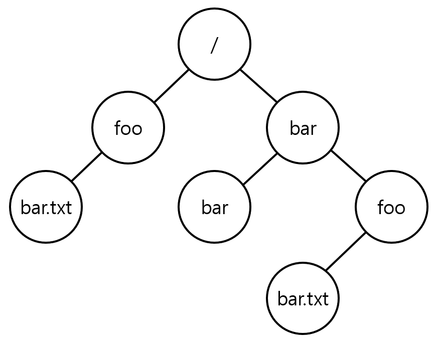

파일과 디렉터리[1]#
파일과 디렉터리#
저장 장치의 가상화에 대한 두 가지 주요 개념인 파일과 디렉토리에 대해 알아봅시다.
파일
읽거나 쓸 수 있는 순차적인 바이트의 배열
아이노드(inode): 각 파일이 갖는 저수준의 이름(low-level name), 이는 보통 숫자로 표현되지만 사용자는 그 이름에 대해서 알지 못합니다.
대부분 시스템에서 운영체제는 파일의 구조를 모르고, 데이터가 요청되면 처음 저장했던 데이터를 돌려줄 뿐입니다.
디렉터리
파일과 마찬가지로 디렉터리도 저수준의 이름(예, 아이노드 번호)을 갖습니다.
디렉터리는
<사용자가 읽을 수 있는 이름, 저수준의 이름>쌍으로 이루어진 목록을 갖고있습니다.ex) <”foo”, “10”> <- 사용자는 foo를 읽음
디렉터리의 각 항목은 파일 또는 다른 디렉터리를 가리킵니다.
디렉터리 내에 다른 디렉터리를 포함함으로써 *디렉터리 트리(directory tree, 또는 디렉터리 계층(directory hierarchy))*을 구성할 수 있습니다.
디렉터리 계층은 루트 디렉터리(root directory) 부터 시작합니다.
구분자(separator) 를 사용하여 하위 디렉터리를 명시합니다. (절대경로: /foo/bar.text)
파일 이름에서 점(.) 뒤에 오는 부분은 관용적으로 파일의 종류를 나타냅니다.

파일 시스템 인터페이스#
이번에는 기본적인 파일 시스템 인터페이스를 좀 더 상세하게 논의해 볼 것입니다.
Note
파일 시스템 인터페이스
파일 생성 파일 접근 파일 삭제
파일의 생성#
open 시스템 콜을 사용하여 파일을 생성할 수 있습니다.
int fd = open("foo", O_CREAT | O_WRONLY | O_TRUNC);
open()을 호출하면서O_CREAT플래그를 전달하면 프로그램은 새로운 파일을 만들 수 있습니다.open()은 다수의 플래그를 받으며, 이 예제에서는O_WRONLY와O_TRUNC플래그도 추가로 전달하였습니다.O_WRONLY: 파일이 열렸을 때 쓰기만 가능하게끔 허용O_TRUNC: 파일이 이미 존재할 때는 기존 내용을 모두 삭제
리턴 값으로 *파일 디스크립터(file descriptor)*를 반환합니다.
파일 디스크립터(file descriptor): 파일 디스크립터는 프로세스마다 존재하는 정수로서 Unix 시스템에서 파일을 접근하는데 사용됩니다.
파일 디스크립터로 파일을 읽고 쓸 때 권한이 필요하고, 이러한 측면에서 파일 디스크립터는 capability입니다.
파일의 읽기와 쓰기#
파일이 있으면, 그 파일들을 당연히 읽거나 쓰고 싶을 것입니다.
커맨드 라인을 사용 중이라면 cat 명령어로 파일을 읽을 수 있습니다.
> echo hello > foo
> cat foo
hello # 화면에 hello 출력
cat 프로그램은 어떻게 파일 foo에 접근할까요?
리눅스에는 strace라는 도구가 있는데, strace는 프로그램이 실행되는 동안에 호출된 모든 시스템 콜을 추적하고, 그 결과를 화면에 보여줍니다.
cat의 동작 과정 예시를 통해 어떻게 파일에 접근하는지 알아봅시다. (strace를 사용)
> strace cat foo
...
open("foo", O_RDONLY|O_LARGEFILE) = 3 # foo 파일 열기
read(3, "hello\n", 4096) = 6 # foo 파일 읽기
write(1, "hello\n", 6) = 6 # stdout에 파일 쓰기
hello # 화면에 hello 출력
read(3, "", 4096) = 0 # foo 파일 읽기
close(3) = 0 # foo 닫기
...
파일을 읽기 위해 먼저 파일을 엽니다.
O_RDONLY플래그 줘서 읽기만 가능O_LARGEFILE플래그 줘서 64bit 오프셋 사용open 성공 후 3이라는 값을 파일 디스크립터로 리턴(표준 입력/출력/오류가 파일 디스크립터 0,1,2를 사용하고 있기 때문)
파일 읽기 성공시
cat은read()시스템 콜을 사용하여 파일에서 몇 바이트씩 반복적으로 읽습니다.첫 번째 인자는
fd가 들어갑니다두 번째 인자는 결과를 저장할 버퍼가 들어갑니다. 위의 경우엔 읽은 결과
"hello\n"가 들어간 것을 표현한 것입니다.세 번째 인자는 버퍼의 크기입니다.
리턴 값은 읽은 바이트 수를 반환합니다. (
"hello\n"는 6바이트)
표준 출력에 읽은 파일을 출력하기 위해
write(1,buf,size)을 해줍니다.파일 디스크립터 1은 표준 출력입니다.
화면에 파일 내용 출력 (hello 띄움)
파일을 더 읽으려고 시도 (더 없으므로 0 리턴)
파일을 다 읽었으므로
foo를close
파일에 쓰는 것도 비슷한 단계를 거칩니다.
파일 열기 - write 시스템콜 호출 (반복) - 파일 닫기
비 순차적 읽기와 쓰기#
지금까지 파일을 읽고 쓰는 과정을 논의하였는데, 모든 접근은 순차적이었습니다. 그렇지만 때로는 파일의 특정 오프셋(위치)부터 읽거나 쓰는 것이 유용할 때가 있습니다.
임의의 오프셋에서 읽기/쓰기 수행
off_t lseek(int fildes, off_t offset, int whence);
첫 번째 인자: 파일 디스크립터
두 번째 인자: 파일 오프셋 (파일의 특정 위치)
세 번째 인자: 탐색 방식
SEEK_SET: 오프셋은offsetbyte로 설정SEEK_CUR: 오프셋은 현재 위치에offsetbyte를 더한 것으로 설정SEEK_END: 오프셋은 파일 크기에offsetbyte를 더한 것으로 설정
“현재” 오프셋을 추적하여 다음 읽기 또는 쓰기 위치를 결정합니다.
오프셋 갱신
N바이트를 읽거나 쓸때,offset+N으로 암묵적 갱신lseek를 사용하여 명시적으로 오프셋 갱신
fsync()를 이용한 즉시 기록#
write() 호출은 성능상 이유로 파일 시스템은 쓰기들을 일정 시간동안 메모리에 모아(버퍼링) 한 번에 저장 장치에 전달됩니다.
어떤 프로그램은 쓰기에 있어서 좀 더 강력한 보장을 필요로 합니다 (ex. DBMS의 복원 모듈). 이럴 땐 강제적으로 즉시 디스크에 기록할 수 있는 기능이 필요합니다.
fsync(int fd)#
특정 fd에 대해 파일의 모든 더티(dirty 즉, 갱신된) 데이터를 디스크로 강제로 내려보내는 유닉스 API
파일 생성과 같이 특정 상황에서는 파일 foo가 존재하는 디렉터리도 fsync() 해주어야 합니다.
파일 이름 변경#
커맨드 라인에서는 mv 명령으로 파일명을 변경할 수 있습니다.
> mv foo bar # foo를 bar로 rename
strace를 사용하면
mv가rename(char *old, char *new)라는 시스템 콜을 호출하는 것을 확인할 수 있습니다. (각각 옛날 이름, 새 이름)rename()은 시스템 크래시에 대해 원자적으로 구현되었습니다.이름 변경 중 시스템 크래시가 발생했을 때, 파일 이름은 원래의 이름이나 새로운 이름, 둘 중의 하나를 갖게 되며 그 사이의 중간 상태는 발생하지 않습니다.
예시 (파일 중간에 한 줄 삽입)
파일의 이름은
foo.txt입니다.
새로운 파일이 원래의 내용과 추가된 줄을 모두 포함합니다는 것이 보장되도록 갱신하는 방법은 다음과 같을 것입니다.
int fd = open("foo.txt.tmp", O_WRONLY|O_CREAT|O_TRUNC);
write(fd , buffer , size); // 파일의 새로운 버전 쓰기
fsync(fd);
close(fd);
rename("foo.txt.tmp", "foo.txt");
임시 파일
foo.txt.tmp생성 후 여기에 기록foo.txt.tmp를foo.txt로 rename
파일 정보 추출#
파일 시스템은 각 파일에 대한 정보를 보관하고, 이를 메타 데이터라고 합니다.
메타 데이터(metadata)#
파일(데이터)에 대한 정보
어떤 파일의 메타 데이터를 보려면
stat()이나fstat()같은 시스템 콜을 사용합니다.stat의 구조
struct stat { dev_t st_dev; /* ID of device containing file */ ino_t st_ino; /* inode number */ mode_t st_mode; /* protection */ nlink_t st_nlink; /* number of hard links */ uid_t st_uid; /* user ID of owner */ gid_t st_gid; /* group ID of owner */ dev_t st_rdev; /* device ID (if special file) */ off_t st_size; /* total size, in bytes */ blksize_t st_blksize; /* blocksize for filesystem I/O */ blkcnt_t st_blocks; /* number of blocks allocated */ time_t st_atime; /* time of last access */ time_t st_mtime; /* time of last modification */ time_t st_ctime; /* time of last status change */ };
파일의 크기, 아이노드 번호, 소유권, 파일 접근/변경 시간 등 다양한 정보를 포함합니다.
일반적으로 파일 시스템은 아이노드에 이 메타 데이터를 보관합니다.
디렉터리 생성#
디렉터리 관련 시스템 콜들은 디렉터리를 생성하고, 읽고, 삭제하지만, 디렉터리에는 절대로 직접 쓸 수 없습니다.
디렉터리는 파일 시스템의 메타데이터로 분류되며, 항상 간접적으로만 변경됩니다.
왜냐하면 파일 시스템은 디렉터리의 내용이 항상 예상과 일치하도록 보장해야 되기 때문입니다.
대표적인 디렉터리 생성 명령어는 mkdir이 있습니다.
mkdir동작 과정 (strace)> strace mkdir foo ... mkdir("foo", 0777) = 0 ...
디렉터리가 처음 생성되면 빈 상태이지만, 사실 자기 자신을 나타내기 위한 dot(.) 디렉터리, 부모 디렉터리를 가리키기 위한 dot-dot(..) 디렉터리를 포함합니다.
디렉터리 읽기#
디렉터리 읽기는 ls와 같은 명령어가 있습니다. ls와 유사한 도구를 직접 만들어 어떻게 동작하는지 알아봅시다.
int main(int argc , char *argv[]) {
DIR *dp = opendir("."); // 디렉터리 열기
assert(dp != NULL);
struct dirent *d;
while ((d = readdir(dp)) != NULL) { // 디렉터리 반복적으로 읽기
printf("%d %s\n", (int) d−>d_ino , d−>d_name);
}
closedir(dp); // 디렉터리 닫기
return 0;
}
간단한 반복문을 사용하여 디렉터리 항목을 하나씩 읽은 후에 디렉터리의 각 파일의 이름과 아이노드 번호를 출력하는 프로그램입니다.
opendir(),readdir(), 및closedir()시스템 콜을 사용합니다. 디렉터리에는 많은 정보가 있지 않기 때문에 (단순하게 이름과 아이노드 번호를 매핑하는 것 이외에 몇 가지만 제공함) 프로그램은 각 파일에stat()을 호출하여 파일 크기와 같은 구체적인 정보를 얻습니다.디렉터리 항목에 저장된 정보
struct dirent {
char d_name[256]; /* filename */
ino_t d_ino; /* inode number */
off_t d_off; /* offset to the next dirent */
unsigned short d_reclen; /* length of this record */
unsigned char d_type; /* type of file */
};
디렉터리 삭제하기#
마지막으로 rmdir() 시스템 콜을 사용하여 디렉터리를 삭제할 수 있습니다.
디렉터리 삭제는 하나의 명령으로 아주 많은 양의 데이터를 지울 수 있기 때문에 좀 더 위험합니다.
때문에
rmdir()은 디렉터리를 지우기 전에 디렉터리가 비어 있어야 합니다는 조건이 붙습니다.
하드 링크#
파일 삭제 시 왜 unlink()를 사용하는지를 이해하기 위해서 이제 파일 시스템 트리에 항목을 추가하는 새로운 시스템 콜 link()를 알아봅시다.
하드 링크 <- link() 시스템 콜 사용
link(char *old, char *new): 원래 경로명, 새 경로명을 인자로 받습니다.원래 파일 이름에 새로운 이름을 “link(연결)”하면 동일한 파일을 접근할 수 있는 새로운 방법을 만들게 됩니다.
명령어
ln이 그 일을 합니다.> echo hello > file1 > cat file1 hello > ln file1 file2 # linking file2 to file > cat file2 hello
file2는 file1의 하드 링크이므로 해당 파일의 내용(hello)를 보려면 file1이나 file2를 열면 됩니다.
link는 새로이 링크하려는 이름 항목을 디렉터리에 생성하고, 원래 파일과 같은 아이노드 번호를 가리키도록 합니다.
단, 파일을 복사되지 않지만, 대신 같은 파일을 가리키는 두 개의 이름(file1과 file2)이 생성됩니다.
> ls −i file1 file2 67158084 file1 67158084 file2 # inode가 같다
즉, link는 동일한 아이노드 번호(이 예제에서는 67158084)에 대한 새로운 링크를 생성합니다.
하드 링크를 생성한 후에는 file1과 file2는 차이가 없습니다. 사실 그 두 개의 파일 이름은 아이노드 번호 67158084에서 찾을 수 있는 파일의 메타데이터에 대한 연결일 뿐입니다.
unlink()가 왜 unlink()가 되었는지 이제 이해되기 시작했을 것입니다.
파일을 생성할 때 사실은 두 가지 작업을 하게 됩니다.
파일 관련 거의 모든 정보를 관리하는 자료 구조(아이노드)를 만드는 것입니다. 파일 크기와 디스크 블럭의 위치 등이 포함됩니다.
해당 파일에 사람이 읽을 수 있는 이름을 연결하고 그 연결 정보를 디렉터리에 생성하는 것입니다.
unlink() 시스템 콜
파일 삭제 시
unlink()를 호출합니다.위의 예제에서 file1을 제거합니다고 하더라도, 여전히 file2를 통해 해당 파일을 어려움 없이 접근할 수 있습니다.
> rm file1
removed 'file1'
> cat file2
hello
파일을
unlink하면 아이노드 번호의 *참조 횟수(reference count)*를 검사합니다.이 참조 횟수 (때로는 *연결 횟수(link count)*라고도 불린다)가 특정 아이노드에 대해 다른 이름이 몇 개나 연결되어 있는지 관리합니다.
*unlink()*가 호출되면 이름과 해당 아이노드 번호 간의 “연결”을 끊고 참조 횟수를 하나 줄입니다.
참조 횟수가 0에 도달하면 파일 시스템은 비로소 아이노드와 관련된 데이터 블럭을 해제하여 파일을 진정으로 “삭제”합니다.
> echo hello > file1 > stat file1 ... Inode: 67158084 Links: 1 ... > ln file1 file2 > stat file1 ... Inode: 67158084 Links: 2 ... > stat file2 ... Inode: 67158084 Links: 2 ... > ln file2 file3 > stat file1 ... Inode: 67158084 Links: 3 ... > rm file1 > stat file2 ... Inode: 67158084 Links: 2 ... > rm file2 > stat file3 ... Inode: 67158084 Links: 1 ... > rm file3
심볼릭 링크#
하드 링크의 제한
디렉터리에 대해서는 하드 링크를 만들 수 없습니다.(디렉터리 트리에 순환 구조가 생길 수도 있습니다)
다른 디스크 파티션에 있는 파일에 대해서도 하드 링크를 걸 수 없습니다.(아이노드 번호는 하나의 파일 시스템 내에서만 유일합니다)
심볼릭 링크 (또는 소프트 링크)#
ln -s명령어 사용> echo hello > file1 > ln −s file1 file2 > cat file2 hello
심볼릭 링크 file2를 통해 원래 파일 file1에 접근할 수 있습니다.
하드 링크와 다르게 심볼릭 링크는 다른 형식의 독립된 파일입니다.
파일, 디렉터리과 같이 심볼릭 링크는 파일 시스템에 존재하는 세 번째 종류의 유형입니다.
심볼릭 링크에 대해
stat명령어를 실행시키면 일반 파일이나 디렉토리와 다른 “symbolic link” 유형이라고 출력됩니다.ls명령어를 통해서도 다르다는 것을 알 수 있습니다. (첫 글자가 l임)
dangling reference: 원래의 파일을 삭제하면 심볼릭 링크가 가리키는 실제 파일은 더 이상 존재하지 않게 되는 현상
> echo hello > file1
> ln −s file1 file2
> cat file2
hello
> rm file1
> cat file2
cat: file2: No such file1 or directory
파일 시스템 생성과 마운트#
다수의 파일 시스템들이 존재할 때 이들을 묶어서 어떻게 하나의 큰 디렉터리 트리를 구성할까요?
여러 개의 파일 시스템 파티션들이 모여서 하나의 큰 디렉터리를 구성합니다.
각각의 파일 시스템을 생성하고, 이들을 “마운트”함으로써 단일 디렉터리 트리를 구성합니다.
mkfs 명령어#
파일 시스템을 생성하는 명령어
장치명과 파일 시스템 타입을 전달하면, 해당 파티션에 전달된 파일 시스템 형식으로 구성된 빈 파일 시스템을 생성합니다.
예) 디스크 파티션
/dev/sda1에 시스템 타입EXT3의 형식으로 구성된 파일 시스템을 생성할 수 있습니다.
생성된 파일 시스템은 자체적인 디렉터리 구조로 구성되어 있고, 비어있습니다. 즉, 루트 디렉터리만 존재합니다.
mount 명령어#
마운트: 새로이 생성된 파일 시스템을 루트 디렉터리에서 시작하는 기존의 디렉터리 구성을 통해 접근할 수 있도록 해주는 것
mount()시스템 콜을 사용하여 기존의 디렉터리 중 하나를 *마운트 지점(mount point)*으로 지정합니다.그리고 나서 마운트 지점에 생성된 파일 시스템을 “붙여 넣습니다”.
예)
파티션
/dev/sda1에EXT3파일 시스템 존재합니다 가정 (아직 마운트 되지 않음)해당 파일 시스템의 루트 디렉터리에
a와b라는 두 개의 하위 디렉토리가 있고, 각 디렉터리에foo라는 파일이 들어있습니다./ ├── a │ └── foo └── b └── foo
이 파일 시스템을
/home/users/위치에 마운트 하기 위해 다음 명령어를 실행합니다.> mount −t ext3 /dev/sda1 /home/users
마운트 성공시, 새로운 파일 시스템을 기존의 디렉터리 경로를 통해 접근할 수 있습니다.
> ls /home/users/ a b > ls /home/users/a/ foo
여러 개의 개별 적인 파일 시스템을 갖는 대신에 마운트는 모든 파일 시스템들을 하나의 트리 아래에 통합시킵니다.
/ ├── home . ├── users . . ├── a . . │ └── foo . └── b └── foo